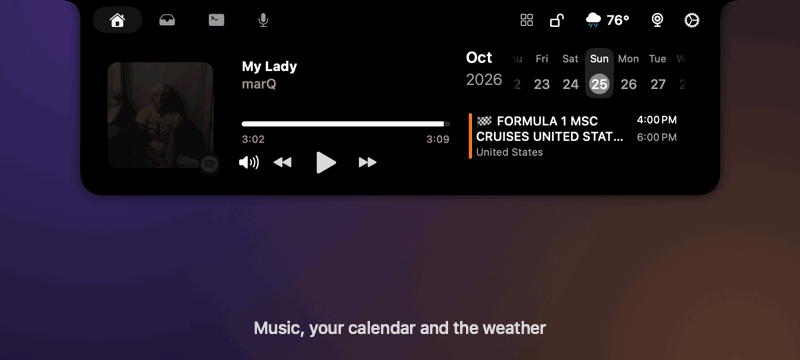
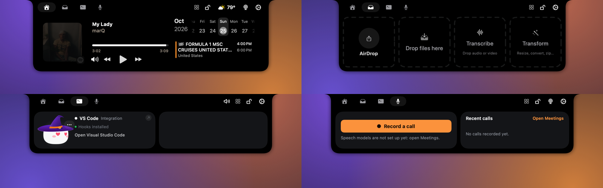

Tuckr turns the space your Mac was wasting into a small control center: your music and day, your AI coding agents, the message that just arrived, a file you want to share or shrink. Point at it and it opens. Move away and it's gone.
macOS 26 or later · Apple silicon · Free and open source (GPL-3.0) · No telemetry

Everything lives in four tabs and a few popups, and gets out of the way when you don't need it.
What's playing with controls, your calendar (tap the month to see the whole month, with a mark under each busy day) and the weather.
Drag a file at the notch to AirDrop it, keep it, transcribe it, or Transform it: resize, compress, convert, rotate, cut out the background, strip metadata, make a PDF, zip.
Claude Code, Codex, Gemini CLI, Cursor and more, live. Approve or deny permission requests and answer questions from the notch. Mochi reacts to what happens.
Popups for Messages, WhatsApp, Telegram, Slack and Mail with quick reply and voice playback. Answer or decline FaceTime, phone and WhatsApp calls.
Hold a key, talk, and the words appear where you're typing. Drop an audio or video file to transcribe it, in Russian and 24 other languages.
One press records your mic and what your Mac plays, transcribes it on your Mac and writes the summary and to-dos, with no bot in the call.
A timer that follows you, your Apple Notes, and a teleprompter you can scroll while it runs.
AirPods and their battery, finished downloads, AirDrop received, Focus on or off, your next event: each drops from the notch for a moment.
No account, no telemetry. Messages are read on your Mac and never saved. Keys live in the macOS Keychain. Updates are signed.
Home, Shelf, Agents and Meetings.

Tuckr reads a lot of what you see, so it is built to keep it to itself.
A welcome screen explains each one and you can skip any.
Tuckr is in beta, so it is not notarized by Apple yet. The first launch needs one extra click.
xattr -dr com.apple.quarantine /Applications/Tuckr.app in Terminal.You need macOS 26 and Xcode.
git clone https://github.com/serjdmitri/Tuckr.gitcd Tuckr && scripts/install.sh
Yes. Tuckr is free and open source under the GPL-3.0 licence. There is no account, no subscription and no ads.
It's made for the notch, but it also works on Macs and displays without one, as a small floating bar at the top of the screen.
Macs with Apple silicon, on macOS 26 or later. The speech models run on the Neural Engine.
No. Messages are read on your Mac and shown in the notch, and nothing is saved. The only network requests are the weather, the update check, lyrics if you turn them on, and any AI accounts you add yourself.
The beta is not notarized by Apple, which needs a paid developer account. Right-click the app and choose Open once; after that it launches normally and updates itself.
Claude Code, Codex, Gemini CLI, Cursor and other tools that can call a hook. Tuckr shows their progress, and you can approve their permission requests from the notch.
Yes. The whole app is GPL-3.0, and the files written for Tuckr are also available under the MIT licence. Everything it is built from is credited on the credits page.